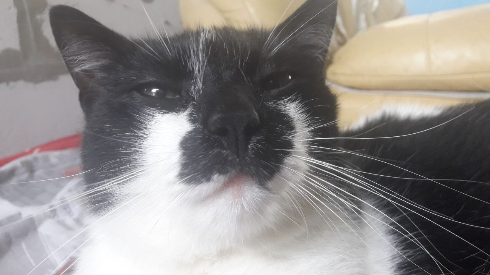

Мій улюблений кіт Беня протягом довгих 15 років був справжнім членом моєї сім'ї. Його прекрасна чорнобіла мордочка радувала мене щодня, і цим сайтом я хочу знову згадати все чудове що було з моїм пухнастим звірем.
Він був котом із важким характером рідко йшов до рук, але був ще тим воїном, який за своє життя встиг спіймати безліч мишей і навіть кілька вужів, але не всі бої йому судилося виграти тому на жаль, на 15-му році життя на нього напала собака, і відбитися він уже не зміг.
Серед його головних захоплень була їжа Беня неймовірно сильно любив свій корм, м'ясо та рибу. Ми завжди пам'ятатимемо, як він зустрічав нас, чекаючи на свій улюбленний корм Felix.
За що я так люблю свого котика
Його улюбленні корми
корм Felix
Цей йому теж заходив
